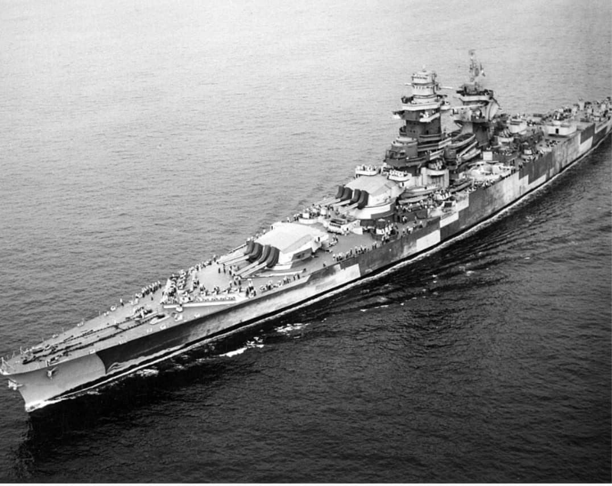
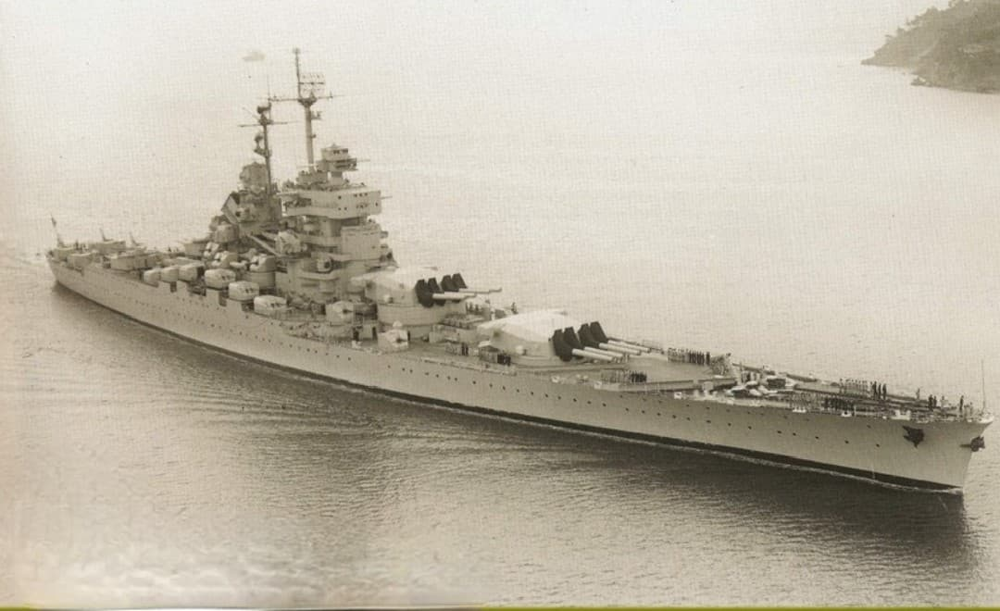

Cette fiche présente les deux cuirassés modernes de la Marine nationale dont la construction était encore en cours à l’entrée en guerre en 1939. Les informations ci‑dessous sont exposées dans un cadre strictement historique et documentaire, conformément aux exigences muséales de neutralité et de contextualisation.
Le Richelieu et le Jean Bart représentent l’aboutissement de la doctrine française du cuirassé rapide : artillerie concentrée à l’avant, coque profilée, blindage moderne et vitesse élevée. Leur état d’achèvement incomplet en 1939 n’empêche pas ces navires de jouer un rôle majeur durant la Seconde Guerre mondiale.

Classe : Richelieu
État en 1939 : non achevé (armement incomplet, systèmes non installés)
Rôle WW2 : fuite vers Dakar, combat contre les Britanniques, rejoint les FNFL en 1943

Classe : Richelieu
État en 1939 : très loin d’être achevé (une seule tourelle de 380 mm installée)
Rôle WW2 : fuite de Saint-Nazaire, combat contre les cuirassés américains à Casablanca (1942)
Page du Musée HOP WW2 – Section navires français